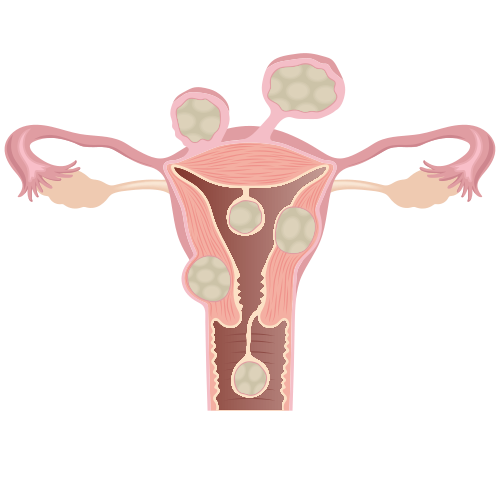
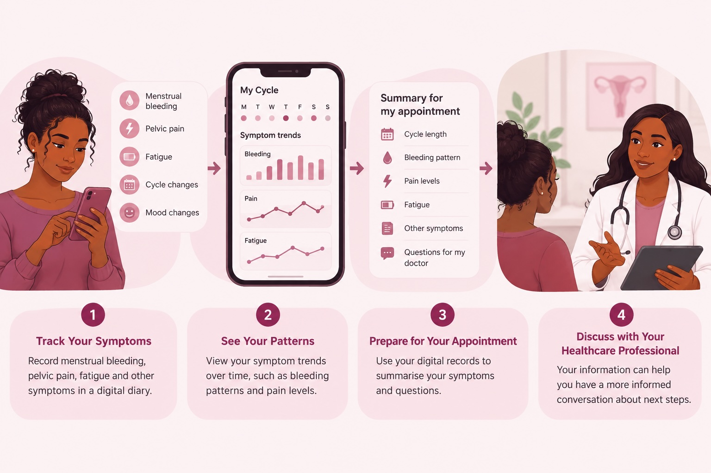

Uterine Fibroids
Unterine fibroids are non-cancerous growth that develop in or around the uterus. They can cause symptoms such as heavy menstrual bleeding, pelvic pain and pressure.

Image: Database Center for Life Science (DBCLS), CC BY 4.0, via Wikimedia Commons
How Digital Health Can Help

Digital symptom tracking can help patients record symptoms, recognise patterns and prepare information for conversations with healthcare professionals.
Image: AI-generated with ChatGPT (OpenAI), 2026.
Symptoms & Bleeding Tracking
Digital tools can help women record menstrual bleeding, pelvic pain, fatigue and other symptoms over time. Keeping a digital symptom diary can make it easier to recognise patterns and provide more structured information during medical consultations.
Understanding Symptom patterns
Recording symptoms over time can help create a clearer picture of hoe fibroids ma affect everyday life. information such as bleeding patterns, pain levels and fatigue can be reviewed over several menstrual cycles instead of relying only on memory during a medical appointment.
Preparing for Medical Appointments
Digital symptom records can help women prepare for conversations with healthcare professionals. Bringing information about bleeding, pain, fatigue and changes over time may help patients describe their symptoms more clearly and discuss appropiate next steps with their healthcare team.
Access to Health Information
Reliable digital health resources can help women learn more about fibroids symptoms, investigations and treatment options Better access to understandable health information can also help patients prepare questions and participate more actively in discussions about their care.
When to Seek Medical Advice
Consider speaking with a healthcare professional if menstrual bleeding becomes very heavy or prolonged, pelvic pain or pressure affects daily life, or symptoms such as fatigue become persistent. Changes in menstrual symptoms should also be discussed with a healthcare professional if they are new, worsening or causing concern.
Digital symptom records can support these conversations, but they do not replace professional medical assessment, diagnosis or treatment.